各シーンは確定キャラ立ち絵(out/cast/)を参照添付し、装飾品ブレ防止の lock を注入して生成しています。 POV シーンは主人公アキを映さない設計です。採否は人間レビュー。左右の入れ替わり等が出たカットは再生成してください。
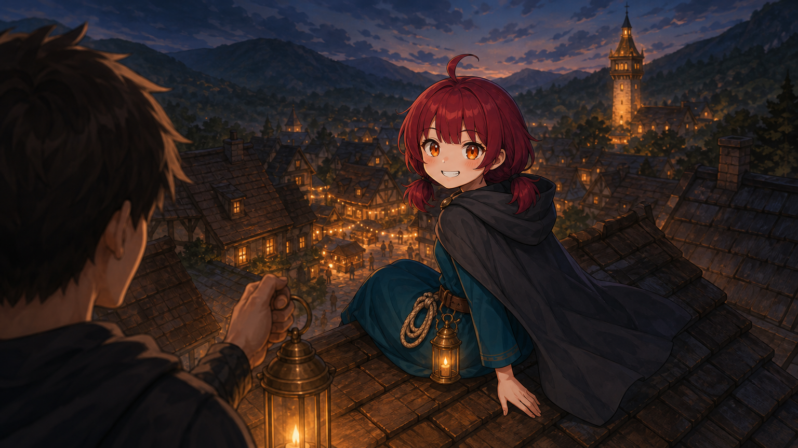
屋根の上: 主人公の後ろ頭・肩越しPOV＋振り返るユイ＋眼下の村祭り＋谷の素朴な灯台
Evening on the village rooftops. Over-the-shoulder shot: in the lower foreground, only the back of the unseen protagonist's head and shoulder. A few steps away on a wood-shingle rooftop sits Yui, twisting back toward the viewer with a cheeky grin. Far below, the village square glows with a small festival of warm lamps, and the great stone-and-timber beacon-lamp tower rises in the valley beyond.
登場: yui / 舞台: nagi_village
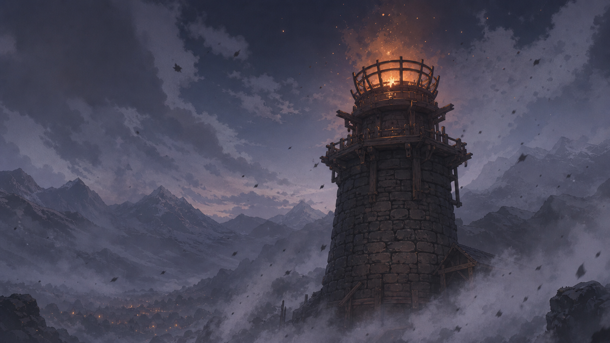
消える大灯: 素朴な灯台の火が落ちる＋灰の靄(人物なし)
No people at all. The great stone-and-timber beacon-lamp tower at night, its large warm flame guttering and dying down to faint embers, while a creeping grey ash mist seeps up around its base and drifts across the scene, draining the color toward dull grey. Ominous and sorrowful, the light of the world going out.
登場: — / 舞台: great_lamp
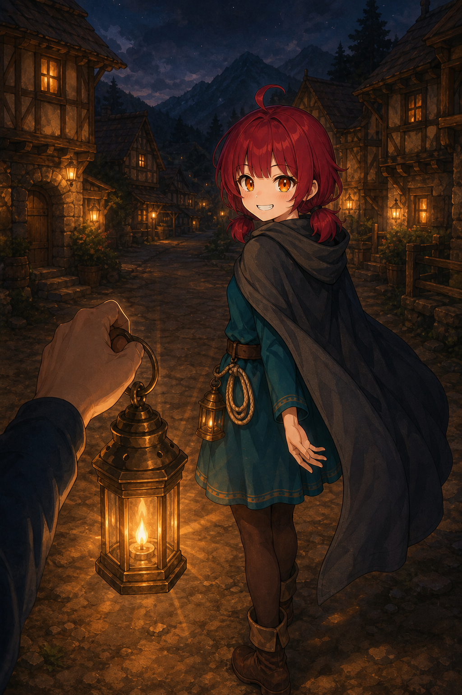
最初の灯: 一人称POV(手＋カンテラ)＋放射状の光＋照らされ振り返るユイ
First-person POV at night in the village street. The viewer's own hand and forearm hold up an old brass kantera lantern in the foreground, its newly lit flame casting radiant beams of warm light outward. The light catches Yui a few steps ahead as she turns back toward the viewer, eyes wide and grinning, lit warmly against the dark.
登場: yui / 舞台: nagi_village
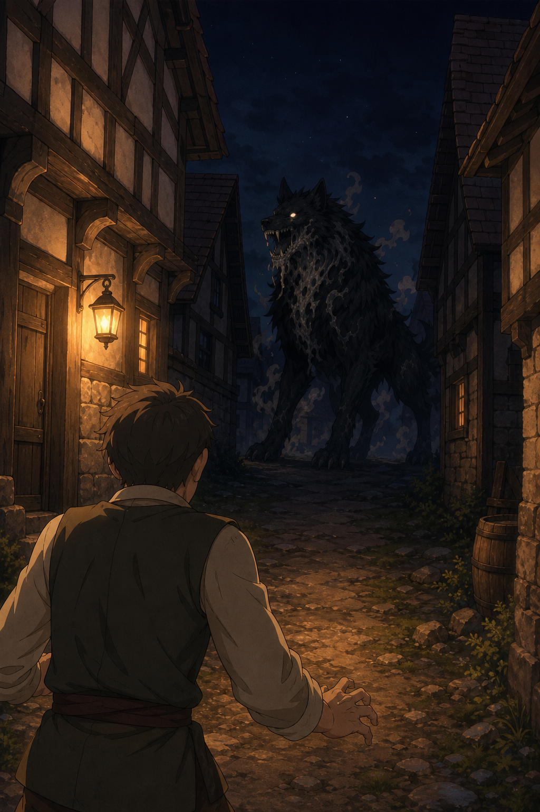
灰狼の影: 路地の奥の獣シルエット＋手前に立ちすくむ村人の背(主人公なし)
A narrow night village alley. At the far dark end, the menacing silhouette of a large black wolf-beast (the hairou), faintly glowing, grey ash leaking from its maw. In the foreground, the back of a frozen, frightened villager rooted in place. The protagonist is not shown. Tense and ominous.
登場: hairou / 舞台: nagi_village_alley
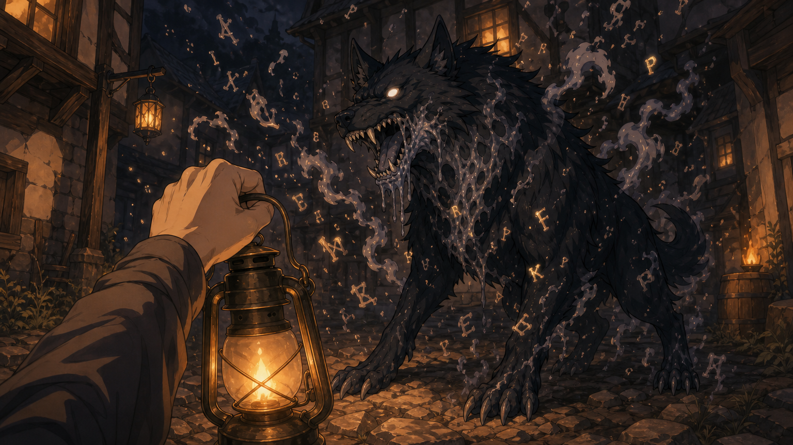
ボス灰狼: POV(手前に腕＋カンテラ・顔は映さない)＋巨狼＋舞う灰の文字
First-person POV boss confrontation in the night alley. The viewer's own forearm and an old brass kantera lantern fill the lower foreground (the viewer's face is never shown). Ahead crouches a huge menacing black wolf-beast leaking grey ash, and between them glowing letters and ashen words swirl in the air. High tension.
登場: hairou / 舞台: nagi_village_alley
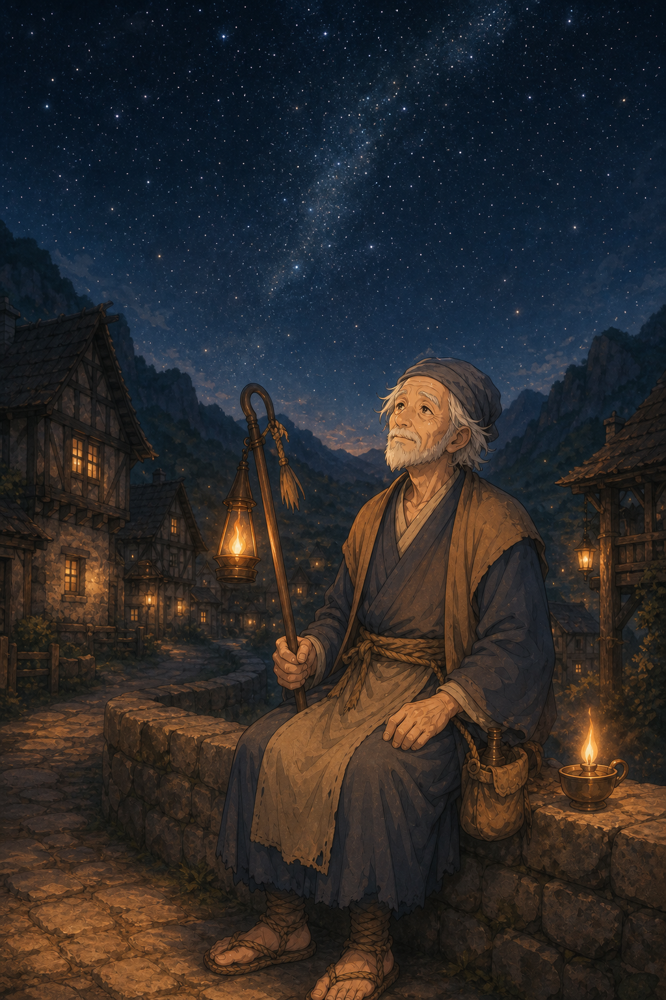
戻らない言葉: 星を見る老灯守＋遠くに小さな二人(ほろ苦)
A quiet bittersweet night in the Western-medieval village. The gentle old lamp-keeper sits alone on a low stone wall, gazing up at the vast star-filled sky, having lost his words, a small lamp resting beside him. Quiet empty lanes and cottages behind him. A small lone human figure under an immense sky, melancholy and tender. No other people.
登場: old_lampkeeper / 舞台: nagi_village
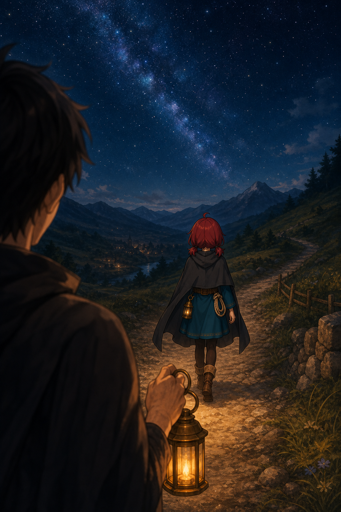
星空の街道: POV(肩越し)＋歩み去るユイの小さな後ろ姿＋満天の星
Over-the-shoulder POV on a country road at deep night. In the foreground, the soft blurred shoulder and back of the unseen protagonist. Ahead, the small back figure of Yui walking away up the pale road, under an overwhelming sky full of stars and the faint band of the milky way. Lonely and beautiful.
登場: yui / 舞台: road2
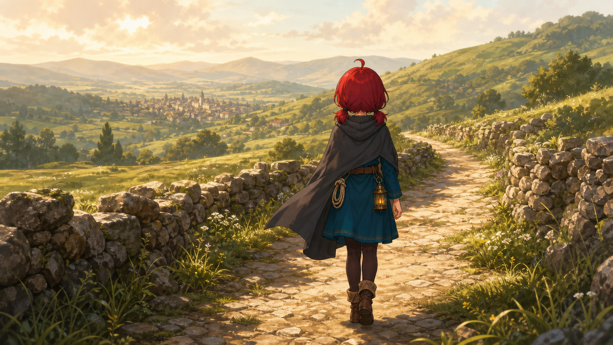
はじめての街道: 先を行くユイの後ろ姿・石垣の道・遠い谷の町・朝
Morning on the open road. Yui walks ahead up a packed dirt-and-stone road lined with low dry-stone walls, winding over green grassy hills, seen from behind at a gentle distance. Far ahead in the valley, a distant town is faintly visible on the horizon. Soft pale morning light, the hopeful start of a journey.
登場: yui / 舞台: road2
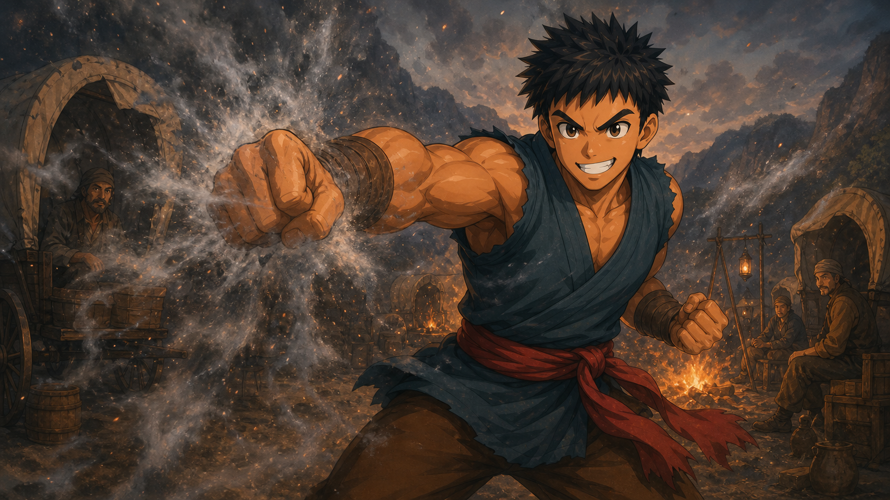
隊商の焚き火: 厚い灰の靄を拳で散らす大柄なガク・幌の荷車・焚き火
At the caravan camp at dusk. The large muscular boy Gaku throws a bare-fisted punch forward, the blow scattering a thick bank of grey ash mist apart into dispersing wisps. Behind him, covered wagons and a warm crackling campfire. Dynamic, heroic, full of energy.
登場: gaku / 舞台: caravan
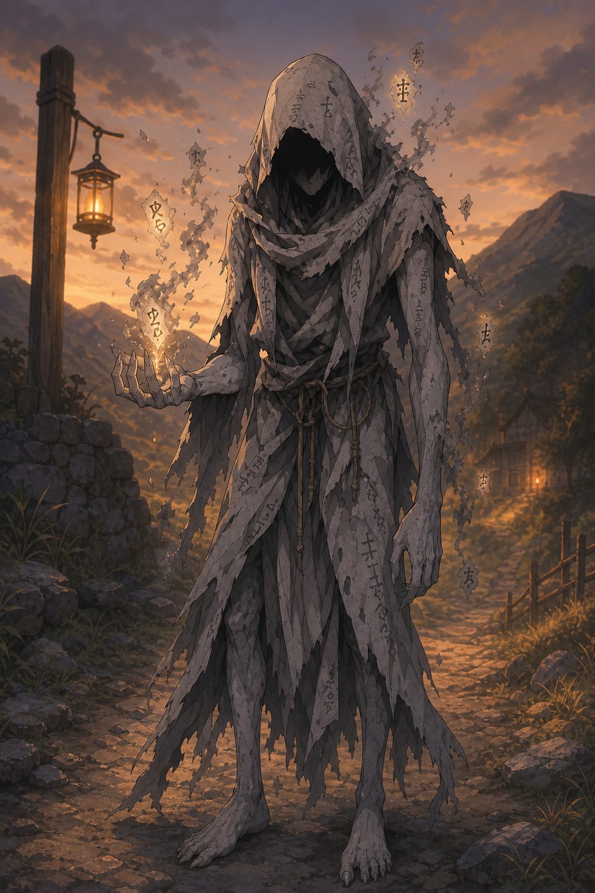
灰の手先ドゥド: 単体・くすんだ灯詞を灰に崩す不穏な登場
An ominous entrance on a country road at dusk. The gaunt hooded ash-servant Doudo stands alone, his ashen grey hands crumbling dull, sickly glowing lamp-words into drifting grey ash that swirls around him. Unsettling and quietly threatening.
登場: doudo / 舞台: road2
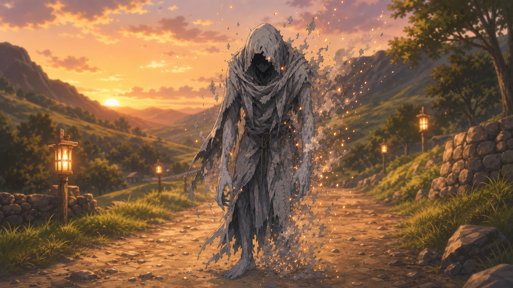
灯詞バトル決着: 撃破されるドゥド単体・灰が暖色の燠火にほどけて静かに崩れる
The end of the duel on the road. The ash-servant Doudo stands alone, defeated; the grey ash that made him is quietly unraveling and dissolving into gentle warm ember-light as he crumbles away. A quiet, melancholy resolution rather than a violent one.
登場: doudo / 舞台: road2
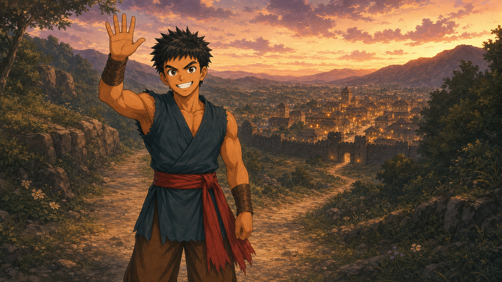
次の灯へ: 笑顔で別れを告げるガク・先を行くユイの後ろ姿・遠景の交易街
Toward the next light, at dusk. In the foreground the big cheerful Gaku grins broadly and raises a hand in a warm farewell toward the unseen viewer. The dirt road leads on down the hillside toward a walled trading town glowing with tiny warm lights on the horizon. A warm, hopeful parting. No other companions in frame.
登場: gaku / 舞台: trade_town